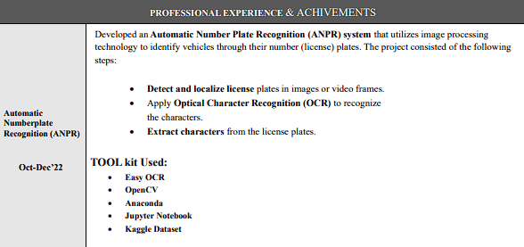

Education
B-Tech in Information Technology Techno International Newtown 8.99/10 2024
Class XII (UP Board) S.S Patel Inter College 69.80% 2019
Class X (ICSE) HBEC , Kanpur UP 88.80% 2017

Achivements and Certification
- Certification of Web-development by Angela Yu
- Certification of Deep learning and prompt Engineering
- Co-Ordinator in Annual Fest (YAGVIK’23) & Annual Sport (Exuberence’23)
Contact
Mob: +91523986658 & Mailid: satyamjaiswal852@gmail.com